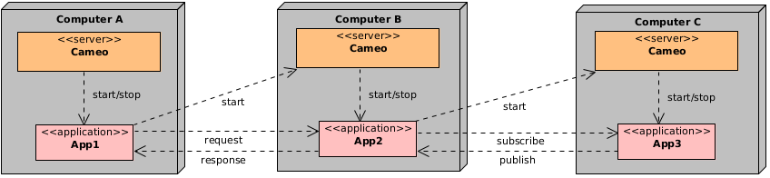

Synchronization
The C++, Java and Python APIs provide a synchronous programming model with some blocking calls. This model provides a simple and easy understandable way of programming.
Blocking calls
List of blocking functions or methods
Here is the list of blocking functions or methods:
| Class | Function/Method | Feature |
|---|---|---|
| Server | init() | Timeoutable |
| App | waitFor() | Cancelable |
| Publisher | init() | Cancelable |
| Subscriber | init() | Cancelable, timeoutable |
| Subscriber | receive() | Cancelable |
| Responder | receive() | Cancelable |
| Requester | init() | Cancelable, timeoutable |
| Requester | receive() | Cancelable, timeoutable |
The cancelable functions or methods are canceled by calling cancel(). When a timeout occurs, the call terminates with an exception.
Cancel the blocking calls
A blocking call blocks the thread in which it executes. To unblock it, the cancel call must be done in another thread. For example in C++ supposing we have a server object:
// Use a shared_ptr to use it in the thread and the main thread.
std::shared_ptr<cameo::App> app(server.start("App"));
// Start the cancel thread.
std::thread cancelThread([&] {
std::this_thread::sleep_for(std::chrono::seconds(1));
app->cancel();
});
// Wait for the app that will be canceled if it does not return within 1 s.
app->waitFor();
// Join the thread.
cancelThread.join();
Same mechanism can be done for a Responder in Java:
// Create a responder.
final Responder responder = Responder.create("the-responder");
// Create and start the cancel thread.
Thread cancelThread = new Thread(() -> {
try {
Thread.sleep(1000);
responder.cancel();
}
catch (InterruptedException e) {
}
});
cancelThread.start();
// Blocking call.
Request request = responder.receive();
// Check request.
if (request == null) {
System.out.println("Responder has been canceled");
}
// Join the thread.
cancel.join();
# Function for the thread.
def cancelAll():
time.sleep(1)
cameopy.This.cancelAll()
# Start the app.
app = server.start("App")
# Start the cancel thread.
cancelThread = threading.Thread(target=cancelAll)
cancelThread.start()
# Wait for the app that will be canceled if it does not return within 1 s.
app.waitFor()
# Join the thread.
cancelThread.join()
You noticed that the create() functions or methods of the Requester and Subscriber classes were not yet cancelable. Indeed they are blocking calls - we will see later why it is interesting - but the current implementation does not allow to cancel them. However a future release will allow to do it.
Timeout
Some functions or methods are timeoutable e.g. init() in Server and receive() in Requester. For the server in C++:
// Create the server object.
unique_ptr<Server> server = Server::create("tcp://localhost:11000");
// Set the connection timeout.
server->setTimeout(1000);
// Initialize the server. An exception may be thrown.
server->init();
For the requester in C++:
// Send a request.
requester->send("request");
// Set the response timeout.
requester->setTimeout(2000);
// Receive the response.
optional<string> response = requester->receive();
// Check timeout.
if (requester->hasTimedOut()) {
// The responder did not respond within 2 s.
}
The benefits of synchronization
We saw that the init() functions or methods of the Requester and Subscriber were blocking. It means that they do not return until they effectively connected. For the requester it means that it waits for the responder to be initialized. For the subscriber it means that it waits for the publisher to be initialized. This feature is important as it allows to start an application - operation that is asynchronous - and define a requester/responder pair that themselves are synchronized. This allows you to define chains of applications like it is shown in this figure:

The application App2 is executed in parallel with App1 however the responder and requester creations are synchronized and it is ensured that no request will be lost. In the same way, App3 is executed in parallel with App2, subscriber and publisher creations are synchronized - if the publisher is synchronized of course - so that no published message is lost.
Another synchronization possibility is to use the RUNNING state. An application can itself declare RUNNING. For example in C++, the beginning code of CppApp:
int main(int argc, char *argv[]) {
// Initialize the app.
cameo::This::init(argc, argv);
// Sleep for 1 s.
std::this_thread::sleep_for(std::chrono::seconds(1));
// Set the state RUNNING.
cameo::This::setRunning();
The application that starts CppApp in Python:
# Start the app.
app = server.start("CppApp")
# Wait for the state RUNNING.
app.waitFor(cameopy.state.RUNNING)
The call to waitFor() will wait until the state RUNNING is published by the CAMEO server of CppApp.
CAMEO offers a very easy way to synchronize the apps, opening the possibility of building chains of synchronized applications of which lifecycle is managed properly.